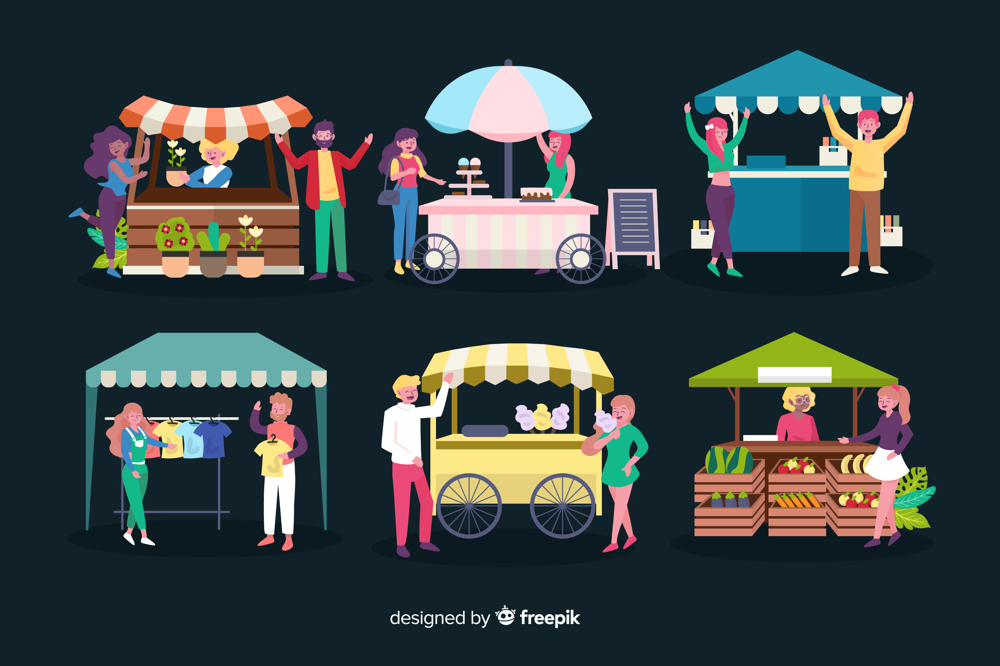
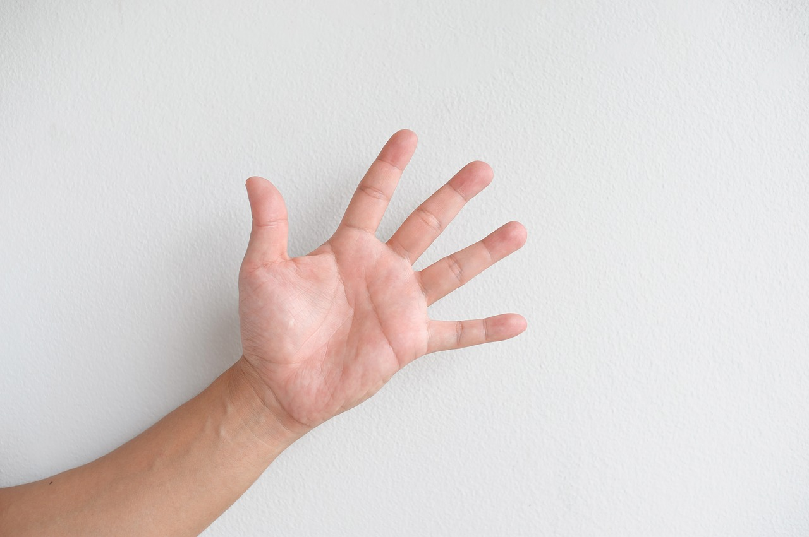
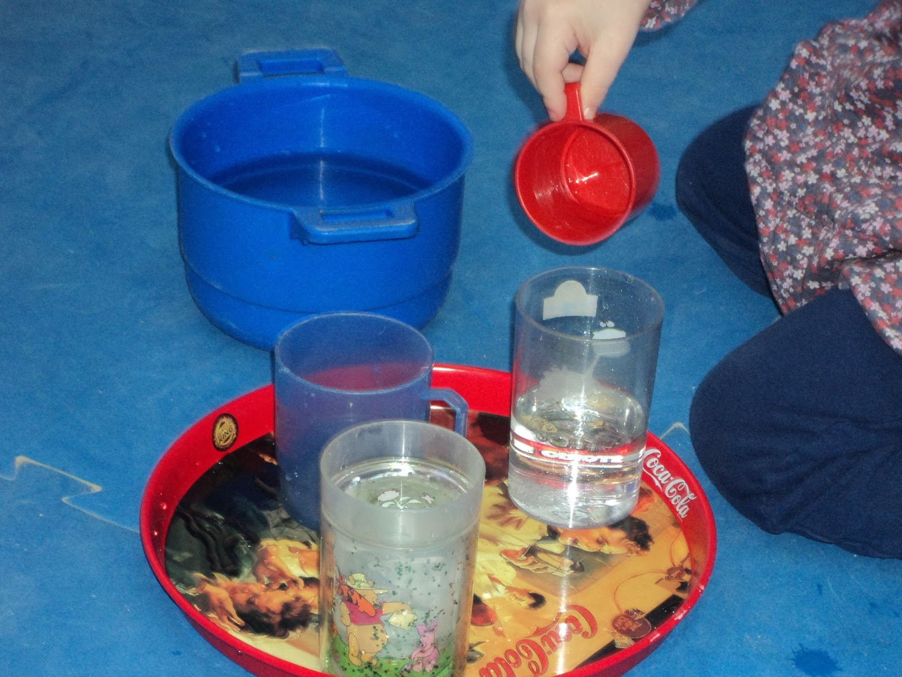

Diccionario
Estand
Definición:
Caseta o puesto desmontable y provisional en el que se expone o se vende un producto en una feria o un mercado.
Ejemplo:
Visitamos todos los estands de la feria.
Palmo
Definición:
Medida de longitud que equivale a unos 21 cm, que es aproximadamente la distancia que hay desde el extremo del pulgar de una mano abierta y extendida hasta la yema del dedo meñique.
Ejemplo:
La mesa mide ocho palmos.
Trasvase
Definición:
Pasar un líquido de un recipiente a otro.
Ejemplo:
Tienes que hacer el trasvase de esa garrafa a las botellas.